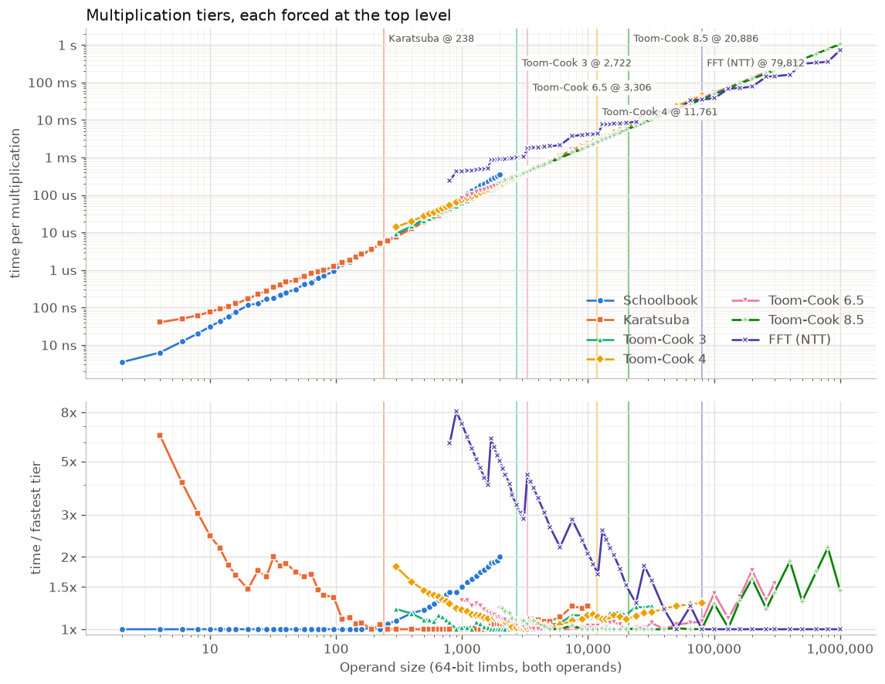
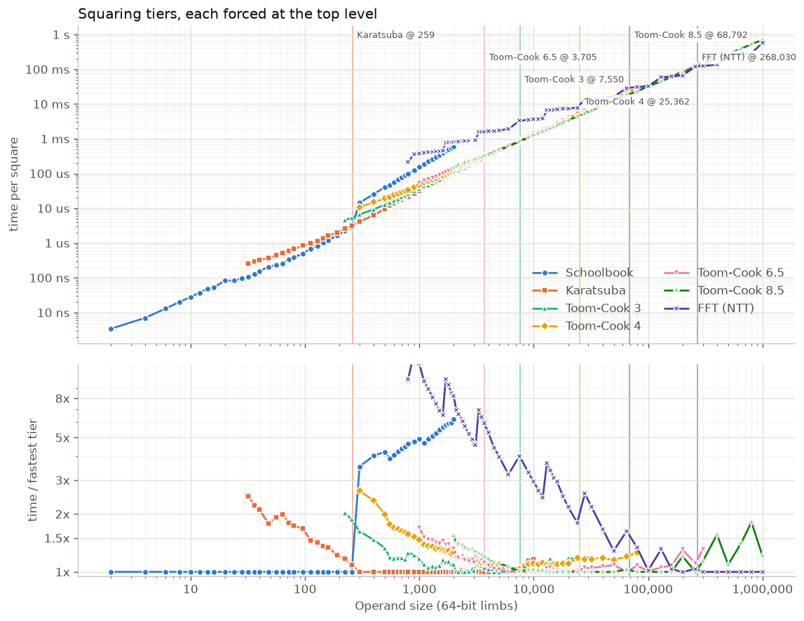
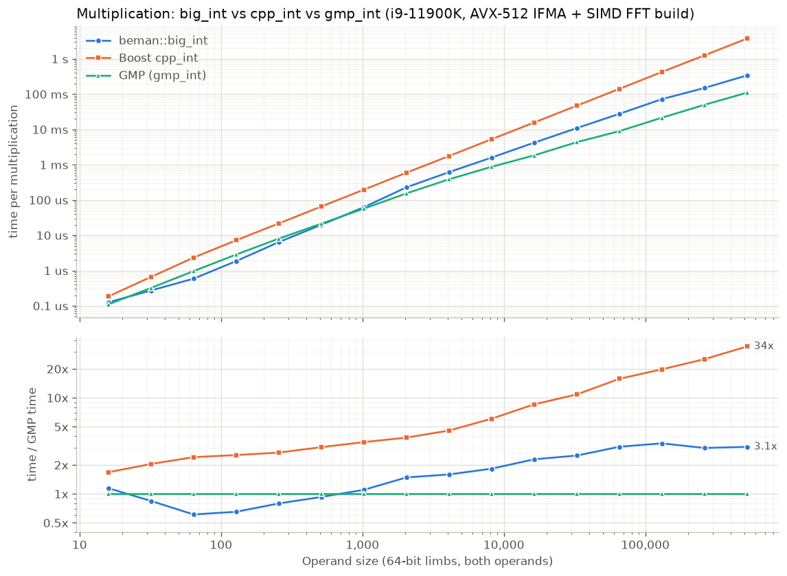
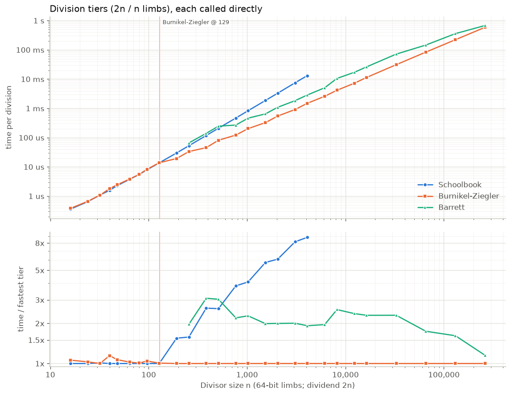
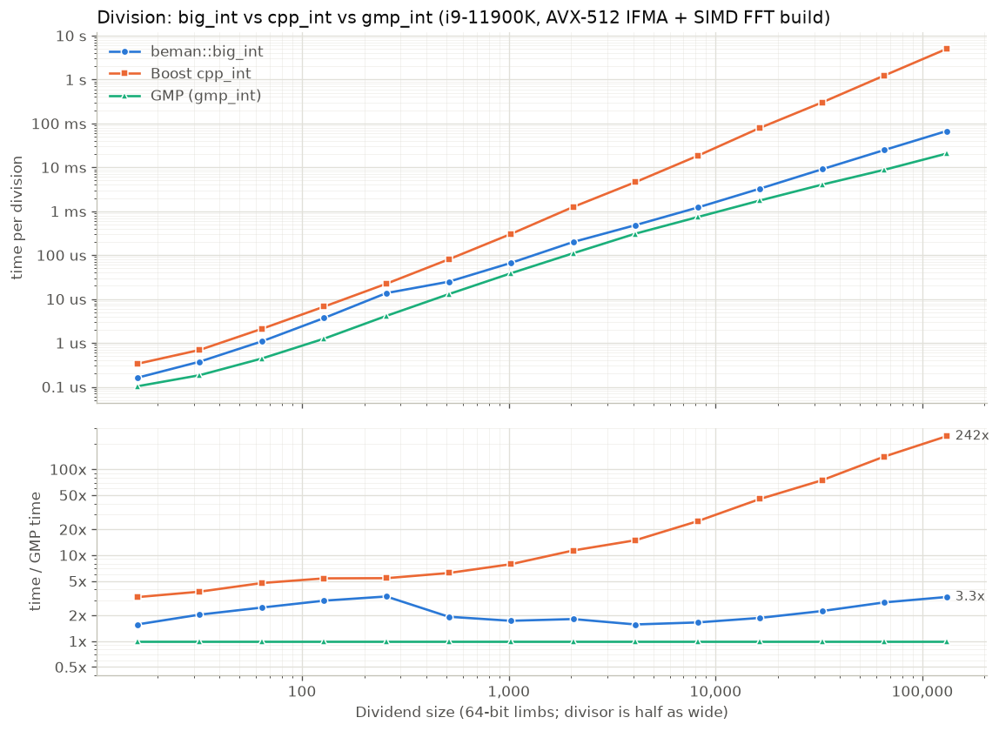

Benchmarks
This page collects the performance measurements for beman::big_int, together
with the methodology behind them. There are two complementary stories:
-
Small-value optimization compares
big_intagainst the native builtin integer types on the four basic operations, showing that small values are handled without heap allocation. -
Large integers compares
big_intagainst the two established arbitrary-precision libraries, Boost.Multiprecision’scpp_intand GMP (gmp_int), at operand sizes from thousands to millions of digits, and explains the algorithm tiers that get it there.
The two suites were measured on different machines and build configurations, so do not compare a number from one against a number from the other; each table is internally consistent and notes its own environment.
Small-value optimization: big_int vs the builtin integer types
A basic_big_int<N> keeps an inplace buffer of ceil(N / 64) limbs, and as long
as a value’s magnitude fits there it is stored directly inside the object with
no heap allocation (see the type
design). The default big_int is basic_big_int<64>, so a single 64-bit limb
lives inplace; basic_big_int<128> keeps two. This suite quantifies that
optimization by timing +, -, *, and / for big_int next to the native
builtin integer types, using Google
Benchmark for the measurement loop. It is built from
small_value_optimization.gbench.cpp.
Three tiers are measured for every operation:
-
64-bit tier —
std::int64_tagainst the defaultbig_int(basic_big_int<64>, one inplace limb). Operands are sized so the result stays within 64 bits, sobig_intnever leaves inplace storage. -
128-bit tier — compares
int128withbasic_big_int<128>(two inplace limbs), the natural same-width counterpart. Built only whereint128exists. -
Large (heap) contrast — the same
big_intoperations on multi-limb, heap-allocated operands (roughly 2^320 and 2^256), to show the cost once a value outgrows the inplace buffer and the optimization no longer applies.
Building and running
Google Benchmark is pulled in with CMake FetchContent (just like GoogleTest),
gated behind the BEMAN_BIG_INT_BUILD_BENCHMARKS option. It is off by default and
only meaningful in a release build, so dedicated release presets enable it:
# Pick the preset for your platform: gcc-release-benchmarks,
# llvm-release-benchmarks, appleclang-release-benchmarks, msvc-release-benchmarks.
cmake --preset appleclang-release-benchmarks
cmake --build --preset appleclang-release-benchmarks \
--target beman.big_int.benchmarks.small_value_optimization
./build/appleclang-release-benchmarks/tests/beman/big_int/perf/beman.big_int.benchmarks.small_value_optimizationEquivalently, add -DBEMAN_BIG_INT_BUILD_BENCHMARKS=ON to any release preset. The
executable accepts the usual Google Benchmark flags, for example
--benchmark_repetitions=7, --benchmark_filter=multiply, or
--benchmark_min_time=0.2s.
Results
Representative medians in nanoseconds per operation, measured on Apple
silicon with AppleClang and a RelWithDebInfo build. Absolute numbers are
machine-dependent.
|
| Operation | std::int64_t |
big_int (1 limb) |
__int128 |
basic_big_int<128> (2 limbs) |
big_int (multi-limb, heap) |
|---|---|---|---|---|---|
|
0.23 |
3.8 |
0.25 |
3.4 |
15.7 |
|
0.23 |
4.2 |
0.24 |
3.9 |
16.1 |
|
0.23 |
1.7 |
0.37 |
5.0 |
30.1 |
|
0.46 |
6.2 |
3.2 |
11.6 |
49.8 |
How to read this:
-
The small-value optimization is the gap between the small-
big_intcolumns and the heap column. A one- or two-limbbig_intoperation costs a few nanoseconds and allocates nothing, while the same operation on a multi-limb operand is roughly 4x—10x slower because every result is heap-allocated. Keeping small values inplace is what closes that gap. -
The builtin columns land at a few tenths of a nanosecond because the operation itself is nearly free and the timing is dominated by a fixed
DoNotOptimizefence that stops the compiler from hoisting or deleting the work. That fence is identical in every cell, so read the table across a row (relative cost) rather than as the absolute cost of a single instruction. -
Even against the builtins the small-value path stays within a small constant factor, and for division the two-limb path of
big_int(11.6 ns) is in the same ballpark as the native__int128divide (3.2 ns), which is itself a library call rather than a single instruction.
Large integers: big_int vs Boost.Multiprecision and GMP
At large operand sizes the relevant comparison is against the established
arbitrary-precision libraries: Boost.Multiprecision’s cpp_int and
GMP (wrapped by Boost as gmp_int). GMP is hand-coded
assembly in its hot paths and is the industry standard for performance, so it is
the natural baseline.
Everything in this section was measured in September 2026 on an Intel®
Core™ i9-11900K (turbo enabled, each run pinned to one core) with GCC 13 and
the gcc-release preset (RelWithDebInfo, -O2), against GMP 6.3.0 and Boost
1.91. big_int was built with the AVX-512 IFMA schoolbook kernels
(-DBEMAN_BIG_INT_X86_64_AVX512_IFMA=ON, which also enables the BMI2/ADX kernels
for small shapes; see
the build guide) and the
SIMD floating-point FFT (-DBEMAN_BIG_INT_SIMD_MUL=ON, see
its floating-point requirements),
the fastest configuration on this machine (see below). In the comparison tables,
bracketed values are time relative to the fastest of the three libraries at that
width, where [1.0] is best.
|
Choosing the x86-64 kernel configuration
On x86-64 the schoolbook kernels are selected at compile time: the generic baseline kernels, the BMI2/ADX kernels, or the AVX-512 IFMA kernels. All three builds were timed through the public operators with the programs of the comparison tables below. IFMA is the fastest at every width for multiplication and from 512 limbs for division. Below that the three tie for division, because Knuth long division does not call the multiplication kernels. Times are microseconds per operation; division divides a dividend of the stated width by a divisor half as wide.
| Operation, 64-bit limbs | generic | BMI2/ADX | AVX-512 IFMA |
|---|---|---|---|
|
5.5 |
4.1 |
1.8 |
|
153 |
122 |
62 |
|
2,900 |
2,450 |
1,550 |
|
18,500 |
16,200 |
10,700 |
|
3.7 |
3.6 |
3.7 |
|
87 |
79 |
66 |
|
2,180 |
1,840 |
1,200 |
|
16,700 |
14,200 |
8,930 |
The SIMD FFT combines with the IFMA kernels. It only replaces the FFT tier, the integer NTT of the default build, with a double-precision transform using AVX2 kernels that is about twice as fast. So it changes nothing below the FFT gate, and its FFT gate for this combination was fitted as described under the cost model below. Timed end to end through the public operators with shape_sweep.cpp on 34 shapes (balanced and unbalanced products up to 1,000,000 limbs, and squares), it was up to 1.8x faster than the IFMA build with the integer NTT. It was 3% and 4% slower at two balanced sizes (50,000 and 80,000 limbs), band tops where the SIMD FFT and Toom-Cook 8.5 are within a few percent of each other and the gate takes the FFT (see the cost model below). Times are the median of five rounds, in milliseconds:
| Operation, 64-bit limbs | IFMA, integer NTT | IFMA + SIMD FFT | Speedup |
|---|---|---|---|
|
35.4 |
36.9 |
0.96 |
|
48.2 |
39.9 |
1.21 |
|
70.0 |
66.5 |
1.05 |
|
127 |
82.2 |
1.55 |
|
308 |
171 |
1.80 |
|
681 |
377 |
1.81 |
|
1,070 |
761 |
1.41 |
|
192 |
148 |
1.30 |
|
281 |
159 |
1.76 |
|
246 |
246 |
1.00 |
|
216 |
135 |
1.60 |
|
704 |
603 |
1.17 |
At 1,000,000 limbs, a band start, the integer build uses Toom-Cook 8.5 and the SIMD FFT is still 1.4x faster. Division only gains where its internal products reach the FFT: its rows below are unchanged up to 131,072 limbs.
Real-world gauge: ECDSA over secp256k1
This test gives an intuitive, end-to-end view of big-integer arithmetic in
elliptic-curve algebra: round-trip 256-bit ECDSA (secp256k1) key generation,
signing, and verification, run once with pre-defined seeds and again over 32
trials with random seeds. It is not a tuned ECDSA implementation but an overall
performance gauge at modest integer widths, exercising a wide range of binary and
unary operations and allocations, and it is timed end to end (the median of five
runs). Runs with beman::big_int, boost::cpp_int, and boost::gmp_int are
compared. At 256 bits the operands are four limbs, below every kernel and FFT
threshold, so the build configuration does not matter here. Source:
elliptic_ecc.perf.cpp.
| Integer type | Time [s] | Relative |
|---|---|---|
|
0.66 |
1.3 |
|
0.59 |
1.2 |
|
0.50 |
1.0 |
Multiplication
Multiplication graduates to successively higher-order algorithms as the operand
limb count grows: schoolbook, Karatsuba, Toom-Cook 3, 4, 6.5 and 8.5, and finally
an FFT tier (a small-prime number-theoretic transform). Where each tier takes over
depends on the machine and on which basecase kernel is in use, so the crossovers
are per-configuration constants in detail/mul_impl.hpp; the table below lists the
values the library currently ships (the shorter operand’s limb count, integer
non-SIMD path). The BEMAN_BIG_INT_SIMD_MUL (floating-point NTT) configurations
use the Toom thresholds of the table with their own FFT gates. The AVX-512 IFMA
build with the SIMD FFT has a cost model of its own (below); the other x86-64
SIMD configurations were not retuned and keep their earlier FFT floors.
Current crossovers
| Constant (limbs) | x86-64 generic | x86-64 BMI2/ADX | x86-64 AVX-512 IFMA | AArch64 |
|---|---|---|---|---|
Karatsuba ( |
48 |
47 |
260 |
112 |
Karatsuba leaf ( |
40 |
40 |
230 |
80 |
Toom-Cook 3 ( |
400 |
400 |
1,600 |
300 |
Toom-Cook 4 ( |
1,400 |
1,600 |
4,000 |
1,400 |
Toom-Cook 6.5 ( |
1,400 |
1,800 |
4,000 |
1,400 |
Toom-Cook 8.5 ( |
1,400 |
7,000 |
6,000 |
15,000 (rarely reached) |
FFT floor ( |
3,000 (cost model) |
3,000 (cost model) |
300,000 (cost model) |
1,400 (cost model) |
Slicing: Karatsuba-zone ratio; large zone from (ratio) |
7/4; 12,000 (9/8) |
7/4; 16,000 (9/8) |
7/4; 30,000 (4/3) |
7/4; 1,400 (3/2) |
Squaring: schoolbook below ( |
5 |
10 |
10 |
5 |
Squaring: Karatsuba ( |
72 |
120 |
257 |
168 |
Squaring: Toom-Cook 3 ( |
300 |
440 |
4,200 |
500 |
Squaring: FFT floor ( |
3,000 (cost model) |
3,000 (cost model) |
500,000 (cost model) |
1,400 (cost model) |
Division: Burnikel-Ziegler divisor / quotient gate |
160 / 64 |
160 / 64 |
160 / 64 |
40 / 10 |
Division: Barrett from divisor of ( |
512 |
512 |
512 |
9 |
Base conversion: input ladder leaf, chunks ( |
512 |
512 |
512 |
16 |
Base conversion: |
8 |
8 |
8 |
3 |
The AArch64 column was measured on an Apple M4 Max end to end through the public
operators (balanced and unbalanced shapes, September 2026) and is also used for
other AArch64 cores. The x86-64 columns were tuned the same way on an Intel®
Core™ i9-11900K (GCC, gcc-release, September 2026), except the division and
base-conversion rows, which keep the earlier per-machine values. The AVX-512 IFMA
column raises the Karatsuba and Toom thresholds because the IFMA schoolbook kernel
stays ahead much longer. On generic x86-64 the Toom-4, 6.5 and 8.5 cutoffs coincide
at 1,400, so the ladder is Toom-Cook 3 up to 1,400 limbs and Toom-Cook 8.5 above.
The hand-written x86-64 schoolbook kernels can also run tens of percent slower for
a few relative buffer alignments (4 KiB aliasing), which shows up as noise in
timings at some sizes.
Two mechanisms make these thresholds shape-aware rather than functions of the shorter operand alone:
-
Slicing. The Toom-Cook kernels only accept near-balanced operands (Toom-3 up to 3:2, Toom-4 up to 4:3, Toom-6.5 up to 7:6, Toom-8.5 up to 9:8), and an unbalanced product outside that range used to cascade all the way down to Karatsuba. Instead, a product whose long/short ratio exceeds a per-size limit is cut into pieces as long as the shorter operand; each piece is a balanced product handled by the normal ladder (or the FFT) and the partial results are accumulated. The limit comes from a small table of size zones per configuration (
mul_slice_z*indetail/mul_impl.hpp), and a product is also sliced whenever Toom-3 would refuse the shape. -
FFT cost model. The FFT time is a step function of the power-of-two transform length, while the Toom ladder is smooth, so a single cutoff is wrong inside every transform-length band. The FFT tier is chosen by an integer cost model: use the FFT when the shorter operand has at least
fft_mul_min_limbslimbs andL * log2(L) * den ⇐ num * max * isqrt(min), whereLis the transform length (the integer AVX-512 IFMA build uses a steeper shape, see below). The model is on for the integer x86-64 and AArch64 builds and covers unbalanced shapes throughmax. With the SIMD FFT it is on for AArch64 and for the AVX-512 IFMA build (num/den15/64 for multiplication and 75/512 for squaring, floors 16,000 and 8,000); the generic and BMI2/ADX SIMD configurations were not retuned and still use a plain floor. Sliced pieces consult the same gate. The model matters on x86-64: the earlier single floors (24,000 limbs for generic and BMI2/ADX) sent products to the scalar NTT although Toom-Cook 8.5 stays faster until about 40,000 to 75,000 limbs balanced (a balanced 28,809-limb product was 2.0x (generic) and 2.3x (BMI2/ADX) slower with the FFT). With the IFMA basecase, Toom-Cook 8.5 stays faster than the integer NTT up to about 720,000 limbs balanced, and than the SIMD FFT up to about 80,000 (see the tier timings below).
Both AVX-512 IFMA gates were fitted to the forced Toom-Cook 8.5 and FFT tiers (balanced, up to 3,276,000 limbs) and to FFT-against-Toom timings of unbalanced products (1:1.5 to 1:16). Whether the FFT wins depends on how full its power-of-two transform is, so it can win, lose and win again as the longer operand grows: with a 300,000-limb shorter operand the integer NTT is 1.2x faster at 1:4, 1.3x slower at 1:6 and on par at 1:8.
-
With the SIMD FFT the model keeps its square-root shape. The earlier constants were fitted to balanced sizes only and left the FFT unused on unbalanced products where it is up to 1.3x faster (100,000 x 150,000 limbs, for example). The refit picks the faster tier on 99% of the balanced sizes and 93% of 67 unbalanced shapes (shorter operands of 16,000 to 1,300,000 limbs, longer ones up to 6,400,000), and the rest are within 1.12x. The balanced sizes it gets wrong are near-ties: at 50,000 and 80,000 limbs the FFT is 3% to 4% slower end to end, but no constant avoids them without also giving up unbalanced products that are up to 1.3x faster with the FFT. On 10 held-out shapes it picked the faster path for 7; the other three (45,000 x 180,000, 75,000 x 600,000 and 120,000 x 240,000) lose 1.07x to 1.15x, because a product the gate rejects is sliced and its pieces then take the FFT one by one.
-
The integer IFMA build crosses over at millions of limbs, where the NTT’s time grows about 2.4x per transform length (memory traffic) instead of the 2.1x of
L * log2(L), and sliced Toom-Cook 8.5 grows likemax * min^0.35. With the square-root shape no single constant fits: the break-even value drifts by about 0.8x per transform length, and the earlier 7/64 and 6/64 took the NTT at every band start from about 900,000 limbs on, up to 1.9x (multiplication) and 2.1x (squaring) slower. This build therefore comparesL * log2(L)^3 * denagainstnum * max * cbrt(min)(num/den298 for multiplication and 268 for squaring). On the fitting data it picks the faster tier for 93% of the balanced sizes and 94% of 52 unbalanced shapes (shorter operands of 300,000 to 1,600,000 limbs, longer ones up to 8,000,000), and the rest are within 1.13x. The multiplication floor of 300,000 limbs is the smallest shape measured, below which the NTT loses anyway. The squaring floor of 500,000 is below the first square the model accepts (788,000).
Checked end to end on shapes that were not part of the fit, the integer IFMA gate picked the faster path for all 16 products (within 1%; for 750,000 x 3,000,000 the dispatcher’s own split beats both forced paths) and was never slower than the old gate beyond noise. Times are the median of three rounds, in milliseconds:
| Operation, 64-bit limbs | Old gate | New gate | Faster forced path |
|---|---|---|---|
|
1,600 |
928 |
926 (Toom) |
|
1,620 |
1,200 |
1,200 (Toom) |
|
1,640 |
1,650 |
1,640 (FFT) |
|
3,980 |
3,010 |
3,000 (Toom) |
|
1,230 |
1,060 |
1,060 (Toom) |
|
3,940 |
2,680 |
2,890 (Toom) |
|
8,990 |
6,770 |
6,770 (Toom) |
|
484 |
438 |
|
|
2,870 |
2,420 |
The hand-written x86-64 BMI2/ADX and AVX-512 IFMA kernels (see
the build guide) move
these thresholds; the IFMA schoolbook gate is itself shape-aware, taking the IFMA
kernel earlier the more lopsided the operands are.
Tier-by-tier timings
To isolate each tier, a stress benchmark
(multiplication_stress_bench.test.cpp)
calls the kernels directly on balanced operands, bypassing the dispatcher. The
schoolbook tier is the runtime basecase kernel (the IFMA kernel here). Every
higher tier is forced at the top level through its benchmark-only
cutoff_override. Its sub-products recurse in the same tier down to that tier’s
own cutoff and then drop to the lower tiers at the production cutoffs, so the
Toom-Cook 4 column, for example, is the ladder up to Toom-Cook 4. The FFT column
is the SIMD FFT alone. Each point is the mean over enough back-to-back calls to fill a
fraction of a second. A forced tier also runs at sizes where the dispatcher would
never choose it, and only balanced shapes are timed, so the crossovers read off
these curves are not the shipped thresholds. Those were tuned end to end through
the public operators on balanced and unbalanced shapes.
The table shows microseconds per multiplication. The fastest tier at each width is
in bold; n/a marks a tier not measured at that width.
| 64-bit limbs | Binary digit width | Schoolbook | Karatsuba | Toom-Cook 3 | Toom-Cook 4 | Toom-Cook 6.5 | Toom-Cook 8.5 | FFT (NTT) |
|---|---|---|---|---|---|---|---|---|
256 |
16,384 |
6.16 |
5.86 |
n/a |
n/a |
n/a |
n/a |
n/a |
1,000 |
64,000 |
90.4 |
60.3 |
61.3 |
72.6 |
79.6 |
n/a |
431 |
2,000 |
128,000 |
361 |
188 |
180 |
198 |
201 |
223 |
904 |
10,000 |
640,000 |
n/a |
2,470 |
2,220 |
2,270 |
2,040 |
1,980 |
4,080 |
32,000 |
2,048,000 |
n/a |
n/a |
12,800 |
12,000 |
10,800 |
10,200 |
16,300 |
80,000 |
5,120,000 |
n/a |
n/a |
n/a |
45,300 |
37,800 |
35,200 |
35,200 |
100,000 |
6,400,000 |
n/a |
n/a |
n/a |
n/a |
53,100 |
48,200 |
37,600 |
300,000 |
19,200,000 |
n/a |
n/a |
n/a |
n/a |
228,000 |
209,000 |
148,000 |
800,000 |
51,200,000 |
n/a |
n/a |
n/a |
n/a |
n/a |
778,000 |
356,000 |
1,000,000 |
64,000,000 |
n/a |
n/a |
n/a |
n/a |
n/a |
1,050,000 |
725,000 |
-
The IFMA schoolbook kernel stays fastest up to about 240 limbs, close to the shipped Karatsuba cutoff of 260.
-
Each higher tier first wins a few sizes before it stays ahead for good, because of noise and each tier’s split-size steps. Toom-Cook 3 stays ahead of Karatsuba from about 2,700 limbs, and Toom-Cook 6.5 ahead of Toom-Cook 4 from about 3,300. Toom-Cook 8.5 pulls ahead of Toom-Cook 6.5 from about 8,000 limbs; the two stay within a few percent up to about 21,000. Toom-Cook 4 only overtakes Toom-Cook 3 for good at about 11,800 limbs, above where Toom-Cook 6.5 has already taken over. This is consistent with the IFMA ladder giving Toom-Cook 4 and 6.5 the same cutoff (4,000 limbs), which leaves no Toom-Cook 4 zone.
-
The FFT time is a step function of the power-of-two transform length, and the FFT cost model accounts for these steps. The SIMD FFT first matches Toom-Cook 8.5 at the top of the band that ends near 51,000 limbs (18.6 ms each at 50,000). It loses again just past the step (33.2 vs 26.7 ms at 65,000) and stays ahead from about 80,000 limbs: 1.3x faster at 100,000, 1.4x at 300,000 and 2.2x at 800,000.
-
The integer NTT of the default build is about 2x slower than the SIMD FFT (673 vs 356 ms at 800,000 limbs). With the IFMA basecase it only overtakes Toom-Cook 8.5 at about 720,000 limbs, and only in the upper part of each band, which the IFMA build’s gate handles as described above. On the generic and BMI2/ADX builds, whose basecase is slower, the integer NTT takes over at about 40,000 to 75,000 limbs balanced (see above).
Empirical complexity
The empirical order x in t ~ n^x is the least-squares slope of log time
against log size over the upper half of each tier’s measured range, from the same
data:
| Tier | Fitted over (limbs) | Empirical x |
Theoretical x |
|---|---|---|---|
Schoolbook |
192 — 2,000 |
1.97 |
2 |
Karatsuba |
700 — 10,000 |
1.62 |
|
Toom-Cook 3 |
2,700 — 32,000 |
1.53 |
|
Toom-Cook 4 |
3,000 — 80,000 |
1.48 |
|
Toom-Cook 6.5 |
6,000 — 300,000 |
1.40 |
|
Toom-Cook 8.5 |
14,000 — 1,000,000 |
1.35 |
|
FFT (SIMD) |
7,500 — 1,000,000 |
1.03 |
1 (times |
Karatsuba and the Toom-Cook tiers fit 0.04 to 0.08 above their theoretical
exponents. A tier’s sub-products below its own cutoff run the lower tiers, which
have higher exponents, and the linear evaluation and interpolation passes add to
it. The
FFT’s n log n shows up as an exponent slightly above 1.
The plots below show the same data from 2 to 1,000,000 limbs: the time per operation of each tier (top) and its time relative to the fastest tier measured at that size (bottom). Vertical lines mark the size after which each tier stays ahead of the tier below it.

Squaring has its own ladder with the same tiers, built on the dedicated square kernels, with the cutoffs listed in the crossover table above. The IFMA square kernel works natively up to 256 limbs, so the schoolbook squaring curve jumps just above that, exactly where the shipped squaring Karatsuba cutoff (257) takes over. Toom-Cook 8.5 squaring is harder for the FFT to beat than Toom-Cook 8.5 multiplication: the SIMD FFT square stays ahead only from about 270,000 limbs.

big_int vs cpp_int vs gmp_int
The result of a multiplication adds the widths of its operands, so each row multiplies two operands of the stated width and the product is twice as wide. The times include allocating the result, for all three libraries. Source: mul_big_int_vs_gmp_cpp.perf.cpp; pass an operand width in limbs (and optionally a trial count) on the command line to reproduce a row.
| 64-bit limbs | Bit width | Approx base-10 digits | us per mul big_int |
us per mul cpp_int |
us per mul gmp_int |
|---|---|---|---|---|---|
128 |
8,192 |
2,500 |
1.85 [1.0] (see 1) |
7.21 [3.9] |
2.84 [1.5] |
512 |
32,768 |
9,900 |
19.8 [1.0] |
65.3 [3.3] |
21.3 [1.1] |
1,024 |
65,536 |
20,000 |
62.6 [1.1] |
196 [3.5] |
56.8 [1.0] |
2,048 |
131,072 |
39,000 |
228 [1.5] |
593 [3.9] |
154 [1.0] |
8,192 |
524,288 |
158,000 |
1,590 [1.8] |
5,280 [6.1] |
872 [1.0] |
32,768 |
2,097,152 |
631,000 |
10,900 [2.5] |
47,100 [11] |
4,350 [1.0] |
131,072 |
8,388,608 |
2,525,000 |
72,300 [3.4] (see 2) |
426,000 [20] (see 3) |
21,500 [1.0] |
524,288 |
33,554,432 |
10,100,000 |
340,000 [3.1] |
3,780,000 [34] |
110,000 [1.0] |
-
With the IFMA basecase,
big_intis faster than GMP from about 32 to 512 limbs (1.6x at 64 limbs, 1.5x at 128) and within 1.1x of it at 1,024 limbs. -
Above that, GMP pulls ahead gradually, to 1.8x at 8,192 limbs and 3.4x at 131,072, a near-tie between the SIMD FFT and Toom-Cook 8.5 (see the cost model above). From there the SIMD FFT keeps the gap from growing: 3.0x at 262,144 limbs and 3.1x at 524,288.
-
cpp_intonly reaches as high as Karatsuba multiplication, so bothbig_intandgmp_intpull ahead at medium-high digit counts; the leadbig_inthas overcpp_intgrows to about 6x at 131,072 limbs and 11x at 524,288.

A mixed sweep of 16,384 products with random widths from 4 to 16,384 limbs (the second operand 0.5x to 1.5x as wide as the first) checks every result against GMP and averages 2.2x GMP’s time, a mean dominated by the widest operands (all below the FFT gate). See mul_big_int_vs_gmp_cpp.limbs.cpp.
Division
Division uses Knuth long division for small divisors and crosses over to the Burnikel-Ziegler algorithm at a divisor of 40 limbs (AArch64) or 160 limbs (x86-64), and to Barrett (reciprocal-based) division for long dividends; above that its performance is driven by the underlying multiplication. The gates are listed in the crossover table above.
Tier-by-tier timings
A stress benchmark (division_stress_bench.test.cpp) calls the three kernels directly, including their scratch setup, and takes the median over three random operand pairs of the best of five repetitions. On balanced 2n / n shapes:
-
Burnikel-Ziegler called below its gate runs the schoolbook kernel, so the two curves coincide up to 128-limb divisors. From the 160-limb gate on it pulls away: 1.6x faster at 192 limbs, 2.6x at 512 and 8.8x at 4,096.
-
Barrett is 2x to 3x slower than Burnikel-Ziegler on balanced shapes up to 32,768-limb divisors, narrowing to 1.15x at 262,144 limbs, where both run on the SIMD FFT. It is only used when the dividend is much longer than the divisor, where the reciprocal is computed once and reused over many blocks. With a 16,384-limb dividend it is 1.8x faster than Burnikel-Ziegler at a 512-limb divisor, 1.5x at 1,024 and 1.2x at 2,048, and slower again at 4,096.

big_int vs cpp_int vs gmp_int
As with multiplication, only the division itself is timed, with a stopwatch read immediately before and after the operation and the times summed and averaged over many trials. Each row divides an N-digit numerator by an N/2-digit denominator, producing an N/2-digit quotient. Source: div_big_int_vs_gmp_cpp.perf.cpp.
| 64-bit limbs | Bit width | Approx base-10 digits | us per div big_int |
us per div cpp_int |
us per div gmp_int |
|---|---|---|---|---|---|
128 |
8,192 |
2,500 |
3.70 [3.0] (see 1) |
6.72 [5.4] |
1.25 [1.0] |
512 |
32,768 |
9,900 |
24.8 [1.9] |
80.0 [6.2] |
12.9 [1.0] |
1,024 |
65,536 |
20,000 |
66.5 [1.7] |
303 [7.9] |
38.6 [1.0] |
2,048 |
131,072 |
39,000 |
199 [1.8] |
1,250 [11] (see 2) |
110 [1.0] |
8,192 |
524,288 |
158,000 |
1,210 [1.6] |
18,300 [25] |
736 [1.0] |
32,768 |
2,097,152 |
631,000 |
9,060 [2.2] |
302,000 [75] |
4,040 [1.0] |
131,072 |
8,388,608 |
2,525,000 |
67,200 [3.3] |
4,990,000 [242] |
20,600 [1.0] |
-
Below the Burnikel-Ziegler gate GMP is 1.6x to 3.3x faster. The gap peaks at 3.3x for a 256-limb dividend (a 128-limb divisor, just below the 160-limb gate). From 512 limbs on,
big_intstays within 1.6x to 3.3x of GMP. -
cpp_intuses a variant of Knuth long division at all limb counts, which is quadratic, sobig_intandgmp_intpull ahead rapidly at medium-high digit counts; the leadbig_inthas overcpp_intgrows to about 15x at 8,192 limbs and 74x at 131,072.

A mixed sweep of 16,384 quotients with divisors of 4 to 16,384 limbs and dividends 1.1x to 2.1x as wide checks every result against GMP and averages 2.0x GMP’s time. See div_big_int_vs_gmp_cpp.limbs.cpp.
Reproducing the measurements
The two stress benchmarks are test executables that only run their sweep when
BEMAN_BIG_INT_RUN_BENCHMARKS is defined, and they print CSV:
cmake --preset gcc-release -DBEMAN_BIG_INT_X86_64_AVX512_IFMA=ON -DBEMAN_BIG_INT_SIMD_MUL=ON \
-DCMAKE_CXX_FLAGS=-DBEMAN_BIG_INT_RUN_BENCHMARKS=1
cmake --build build/gcc-release --target beman.big_int.tests.multiplication_stress_bench \
beman.big_int.tests.division_stress_bench
cd build/gcc-release/tests/beman/big_int
taskset -c 2 ./beman.big_int.tests.multiplication_stress_bench | grep -E '^[a-z0-9.-]+,' > crossover_tuning_data.csv
taskset -c 2 ./beman.big_int.tests.division_stress_bench | grep -E '^[a-z-]+,' > division_tuning_data.csv
python3 <source-dir>/tests/beman/big_int/perf/plot_crossover.py crossover_tuning_data.csv \
--division division_tuning_data.csvThe .perf.cpp and .limbs.cpp programs need Boost.Multiprecision and GMP and
are compiled by hand against the library, with the same kernel macros as the
library build (here -DBEMAN_BIG_INT_X86_64_BMI2_ADX=1
-DBEMAN_BIG_INT_X86_64_AVX512_IFMA=1 -DBEMAN_BIG_INT_SIMD_MUL). plot_vs_libraries.py plots a CSV of
their results (columns op,limbs,trials,big_int_us,cpp_int_us,gmp_int_us). The
data behind the figures on this page is kept next to the scripts as
crossover_tuning_data.csv, division_tuning_data.csv and
vs_libraries_data.csv.
Base conversion and string representations
Sub-quadratic base conversion is the basis for the library’s <charconv> support.
This includes the to_chars and from_chars functions and the primitives beneath them.
These functions provide the interface for converting big integers to and from their string
representations. The performance of these operations is governed primarily by the
efficiency of the underlying multiplication and division algorithms described
above. This holds for converting to and from string representations in any
base other than 16. For base 16, the string conversions have linear complexity.
Order-N operations
Addition, subtraction, bit-shift, comparison, and hashing are linear in the limb count and are not tabulated separately here. Their behavior at builtin widths, where the small-value optimization keeps them allocation-free, is covered in the small-value section above.
Architecture-specific optimizations
Dedicated architecture-specific optimizations using hand-written assembly can be very advantageous regarding runtime performance for this library. This is often the case for both the reference application as well as for potential future adaptions of the library to other architectures.
A particularly effective and straightforward assembly-based optimization is hand-coding the schoolbook long multiplication algorithm in the processor’s assembly dialect. The simple optimization of schoolbook long multiplication percolates through many algorithms in the library. Not only is schoolbook long multiplication itself accelerated, but also all the classical multiplication splitting-algorithms Karatsuba and all orders of Toom-Cook are optimized as well. This is because after the splitting of long limb spans is performed, the real work of these algorithms still falls through to basecase schoolbook long multiplication. Simultaneously sub-quadratic large-limb-count long division and base conversion directly benefit since they are built atop the multiplication algorithms and directly benefit from their optimizations.
Experience shows that with one single assembly file performing basecase schoolbook long multiplication stark improvements in the performance of nearly the entire library can be achieved.
A proof of concept is included for the popular x86_64 architecture
in its generic form. We have implemented basecase schoolbook long multiplication
in hand-coded assembly for x86_64 on compiler systems GCC, clang and MSVC,
the detections of which happen at compile time. Beyond the generic kernels, BMI2/ADX
and AVX-512 IFMA variants are selected at compile time when the target supports
them (see the build guide); the
table below predates them and shows the generic kernel only.
An overview of multiplication performance is shown in the table below.
Multiplication operations performed over a wide range of limb counts
with and without assembly optimization have been compared with
the same calculations for GMP (gmp_int). The heats ran 131,072 trials
for multiplication with limb counts ranging from 16-2,048
and for division with limb counts ranging from 16-3,072.
Results for multiplication are explicitly shown in the table below. Similar performance improvements can be observed for division. For this measurement, an Intel® Core™ i9-11900K at 3.50GHz has been used.
| system | time C++ [us/mul] | time ASM [us/mul] | improvement [percent] | ratio ASM/gmp_int |
|---|---|---|---|---|
|
305 |
210 |
31 |
2.2 |
|
380 |
230 |
39 |
2.4 |
|
--- |
95 |
--- |
1 |
The relative performance improvement is significant; simply via creation of and inclusion of a single hand-coded assembly routine for schoolbook long multiplication.
An adaption of the program
mul_big_int_vs_gmp_cpp.limbs.cpp
has been used for this runtime result. The implementations of the assembly subroutines
beman_big_int_multiply_long_runtime() for x86_64 using GCC(clang)/GAS and using MSVC/MASM
can be found in
multiply_long_runtime_x86_64_generic.s
and
multiply_long_runtime_x86_64_generic.asm,
respectively.
At the moment, the assembly optimized routines can not be used within
a constexpr context (nor with consteval). The use of
beman_big_int_multiply_long_runtime() has been isolated exclusively
to the runtime path. The constexpr path, however, remains available
when compile-time evaluation is possible with no additional limitations
imposed by the use of hand-coded assembly.
Squaring
Squaring has a companion routine, beman_big_int_square_long_runtime(),
written in the same style and under the same constraints: baseline x86_64
instructions only, with no SSE, AVX, BMI2 or ADX. It builds each cross product
a[i] * a[j] just once (the off-diagonal triangle), using the same rows as
the multiplication routine but each row only as long as the limbs above a[i].
A single final pass then doubles the triangle and adds the diagonal squares
a[i]^2, which roughly halves the widening multiplies of a general product.
The routine handles x * x from square_long_cutoff limbs (5 on generic
x86_64, 10 with the BMI2/ADX kernel) up to the Karatsuba squaring
threshold and the leaves of the Karatsuba squaring recursion, so the
Toom-Cook squaring tiers built on top of them speed up too. Below that,
x * x keeps using the multiplication routine, which is as fast or faster
there once the whole dispatch is measured. On architectures without a
hand-coded kernel (anything other than x86_64 and AArch64), a portable
C++ version of the same algorithm takes its place.
The table below compares the new routine with the two basecases that squares
used before it: the portable C++ square_long, and the general
assembly multiplication called with a * a (used for fewer than 8 limbs).
Times are per square, measured on the same Intel® Core™ i9-11900K.
| limbs | C++ square_long [ns] |
ASM multiply a * a [ns] |
ASM square [ns] |
|---|---|---|---|
4 |
13 |
9 |
9 |
8 |
33 |
35 |
25 |
16 |
111 |
113 |
82 |
32 |
421 |
448 |
273 |
64 |
1549 |
1796 |
970 |
The implementations can be found in square_long_runtime_x86_64_generic.s and square_long_runtime_x86_64_generic.asm.
AArch64
The same basecase routines are available for AArch64, written against
baseline ARMv8.0-A A64 instructions only, with no NEON, SVE, or LSE, so they
run on any 64-bit Arm core. One
GNU-syntax file assembles under both Linux ELF (GCC/clang) and Apple Mach-O
(AppleClang); a companion armasm64 .asm file covers MSVC on Windows ARM64.
Detection happens at compile time, alongside the existing x86_64 detection.
Once rows are at least 8 limbs long (the longer operand has 8 limbs, or 9 for squaring), both routines process two rows per pass. The second row trails the first by one four-limb block, aligned so that it only reads result limbs the first row has already finished with. The two rows' carry chains are independent, so the core overlaps them, hiding much of each row’s carry latency. Smaller operands, and an odd row left over at the end, use the one-row code.
The table below compares the portable C++ multiply_long against the
assembly multiply_long_runtime, measured per operation on an Apple M4 Max
(appleclang-release).
| limbs | C++ multiply_long [ns] |
ASM multiply_long_runtime [ns] |
|---|---|---|
4 |
6 |
8 |
8 |
28 |
20 |
16 |
121 |
63 |
32 |
384 |
245 |
64 |
1659 |
953 |
Squaring follows the same design as the x86_64 routine: it builds the
off-diagonal triangle once, then doubles it and adds the diagonal squares in a
single pass. The table below compares the portable C++ square_long,
the general assembly multiplication called with a * a, and the dedicated
assembly square, all measured the same way on the same machine. As on
x86_64, x * x below the squaring cutoff (4 limbs here) uses the
multiplication routine.
| limbs | C++ square_long [ns] |
ASM multiply a * a [ns] |
ASM square [ns] |
|---|---|---|---|
4 |
12 |
8 |
6 |
8 |
36 |
19 |
18 |
16 |
85 |
66 |
55 |
32 |
295 |
241 |
163 |
64 |
899 |
946 |
548 |
The implementations can be found in multiply_long_runtime_aarch64_generic.S, multiply_long_runtime_aarch64_generic.asm, square_long_runtime_aarch64_generic.S, and square_long_runtime_aarch64_generic.asm.
With these basecases, AArch64 uses schoolbook multiplication up to 112 limbs
(the shorter operand’s length) instead of 48, and the squaring basecase up to
168 limbs instead of 72. Both cutoffs, and the Karatsuba leaf size (80 limbs),
were tuned end to end on the M4 Max, including unbalanced products; see the
crossover table. The tables in this section were
measured before that final tuning and show the kernels, not the dispatch.
NEON, SVE2 and SME
NEON has no 64 x 64 → 128-bit multiply, so a vector kernel has to split limbs
into smaller digits. A prototype was measured and not adopted. It multiplied
32-bit by 16-bit digits with UMLAL, so that 64-bit lanes can accumulate
column sums without overflow, and ran alongside scalar rows. On the M4 Max,
the vector part alone reached 0.3 to 0.6 limb-products (64 x 64-bit partial
products) per cycle at 16 to 47 limbs. The scalar routine reached 0.8 to 0.9.
That put the expected gain from interleaving the two at only about 5 to 15
percent, and only near the top of the schoolbook range.
The scalar routine is already close to the core’s limit. The M4’s 64-bit multiplies and flag-setting additions compete for the same execution pipes, which caps a schoolbook row at about one cycle per limb-product.
SVE2’s add-with-carry-long instructions (ADCLB/ADCLT) are not available
outside streaming mode on Apple cores. SME’s streaming mode adds a mode switch
on every call and moves data through the L2 cache. Its outer products also
produce individual partial products rather than the column sums that
schoolbook multiplication needs.
Source programs
The programs behind these measurements live in tests/beman/big_int/perf.
| Source file | Description |
|---|---|
Google Benchmark comparison of |
|
Elliptic-curve cryptography (ECDSA) overall performance gauge at modest limb counts. |
|
Multiplication performance with fixed limb counts and timing. |
|
Multiplication performance with mixed limb counts, with timing and numerical-correctness checks. |
|
Division performance with fixed limb counts and timing. |
|
Division performance with mixed limb counts, with timing and numerical-correctness checks. |
|
End-to-end timing harness used for tuning: multiplication, squaring and division through the public operators over a list of operand shapes (balanced and unbalanced), with residue checks and an optional GMP column. Built as the |
|
Each multiplication and squaring tier (schoolbook kernels through FFT) forced at the top level on balanced operands; CSV output for |
|
The schoolbook, Burnikel-Ziegler and Barrett division kernels called directly on balanced, quotient-length and unbalanced shapes; CSV output for |
|
Plots the tier timings and crossovers of multiplication, squaring and division, and fits their empirical complexity. |
|
Plots |